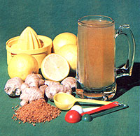

Celebrate spring by brewing this spicy, traditional Australian beverage:
Folks who prefer a self-sufficient lifestyle are always looking for ways to "do it themselves" and avoid expensive store-bought items . . . and that rule applies to Australian back-to-the-landers as well as to those of us in North America! In fact, when I lived "down under" for a time, I learned the secrets of making delicious ginger beer from a neighbor who used to share the fruits of such efforts on warm afternoons.
I was quite impressed by his method of beermaking: the superior quality of ingredients used . . . the loving care he lavished on the starter (or "plant", as it's usually called by Aussies) . . . and the surprising ease of the beverage's preparation. The hazy, pungent drink - which has only a small alcohol content - is also an effective thirst quencher, so I made sure to memorize my friend's techniques before I left the southern continent.
Ginger beer - as it's made down under - has its simple beginnings in the plant . . . which combines Sultana (or golden) raisins, fresh lemons, raw sugar, spring water, and freshly ground ginger. (The spice is available in most any food store, or you may, if you live in the eastern portions of the U.S. or Canada, be able to forage for wild ginger - Asarum cana dense - on your own acres. Just dig up the long horizontal roots, which lie right below the surface, and chop them fine.) The starter for ginger beer is allowed to ferment for a week before the brewing process can begin. And - as is done in the American method of making sourdough - a portion of that plant is always set aside to initiate future batches.
In a quart jar, stir together 8 raisins (in a pinch, you can always substitute darker varieties for the golden Sultanas I've specified), the juice of 2 lemons, 1 teaspoon of grated lemon rind or pulp, 4 teaspoons of raw sugar (I prefer to use turbinado), 2 teaspoons of ground ginger root, and 2 cups of spring water. Allow the mixture to stand in a warm place - where the temperature will stay between 70 and 80°F - for two or three days, until it starts to ferment. (The process may take a bit longer in cool weather.)
After the plant has begun to "work", you'll need to feed it once a day, for a week, with a mixture of 2 teaspoons of ground ginger and 4 teaspoons of turbinado sugar. At the end of seven days, the starter will be ready for use in the brew.
To make a batch of ginger beer, you'll need a large mixing bowl (or a blue enamel canner) and one case of clean, sterilized beer - or soda - bottles. Pour 4 cups of boiling water over 4 cups of sugar, and stir the mix until the granules are dissolved. Then add 3 quarts of cold spring water, the juice of 4 lemons, and the starter. Strain the resulting liquid through a muslin square placed in the bottom of a colander . . . then squeeze the cloth dry, into a separate container, and save the "salvaged" moisture to begin the "plant" for your next batch of ginger beer.
Stir the strained lager well, and fill each bottle to within an inch of its top. (This recipe should produce enough to fill 20 to 24 bottles.) Then cap each container tightly with a metal top . . . using a beer bottle capper (which you should be able to buy for under $15 at a good hardware or homebrew supply store). Because of the "explosive" nature of the stored liquid, it's essential that you use returnable bottles . . . not the thinner disposable containers (which simply can't stand up to the pressure).
After three days at room temperature, the Australian brew will be ready to be cooled and consumed. However, if you don't drink it all right away, be sure to store your ginger beer in a refrigerator or root cellar where it will remain cool. I once tried stashing my hoard in the basement during a spell of hot weather . . . and was rudely awakened in the middle of the night by the sound of exploding bottles! I've also learned - from experience - to open each bottle inside a wide-mouthed pitcher, just in case that particular "vintage" is especially bubbly.
In addition, don't forget to care for the leftover plant, so you can use it to start your next batch of the effervescent potable. Just pour it into a clean quart jar and add 2 cups of spring water, 2 teaspoons of ground ginger, and 4 teaspoons of raw sugar. Then lovingly watch over the mixture-and feed it with the same daily dosage you gave the original starteruntil you're ready to concoct another round of ginger beer. The plant will "die" after about a week, though . . . so you'll need to use it for a new batch within seven days, or throw out the spent starter and begin all over again.
Because of differences in weather, bottling conditions, and ingredients, you'll find that no two batches of the Australian beer turn out exactly alike . . . but that's part of the fun of making it yourself. At any rate, my guess is that - once you've produced your first bottles of the spicy, tingling drink - you'll often gather with friends to share a glass of this delightful brew, and exchange a rousing "Good on ya, mate"!
EDITOR'S NOTE: Ginger beer is only one of dozens of unusual beverages you can brew in, your own kitchen, using natural ingredients. For some other ideas, you might like to try one of the recipes in S.M. Tritton's book, Guide to Better Wine and Beer Making for Beginner's (Dover Publications, Inc.). Look for it at your favorite bookstore, or order a copy - for $2.50 Plus 95 cents shipping and handling - from Mother's Bookshelf, P.O. Box 70, Hendersonville, North Carolina 28791.
|
 |
|
|